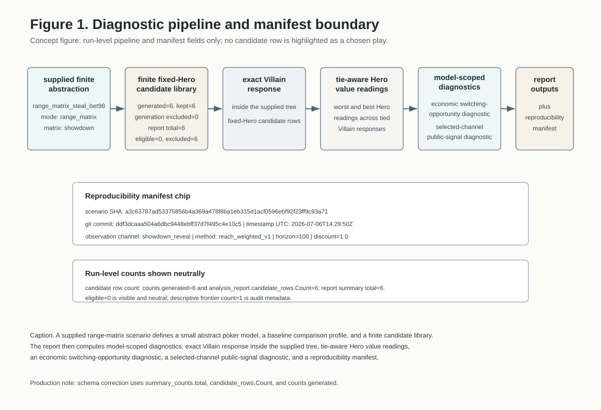
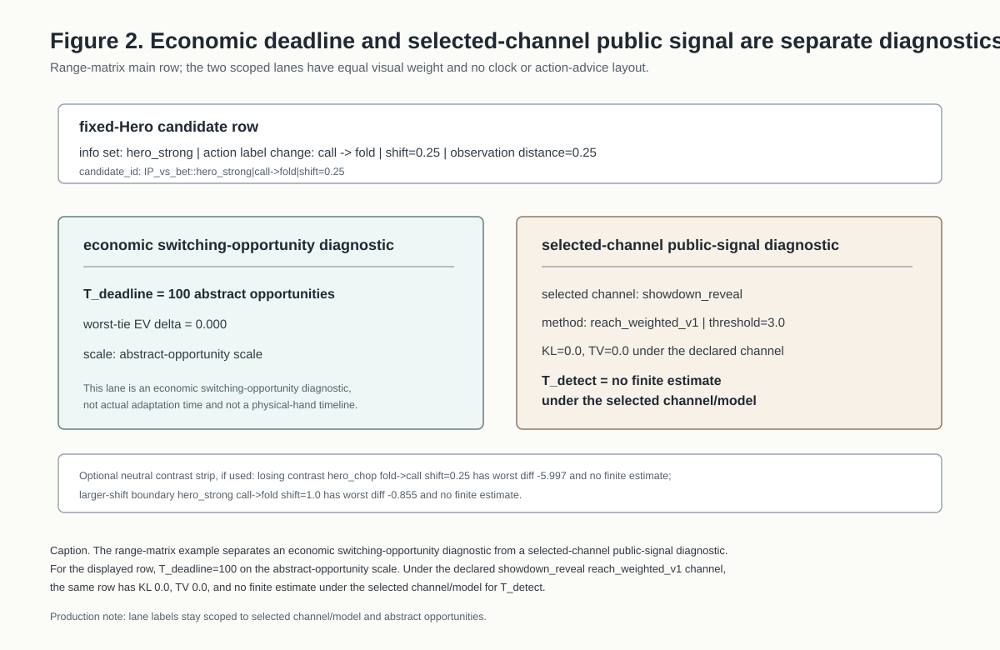
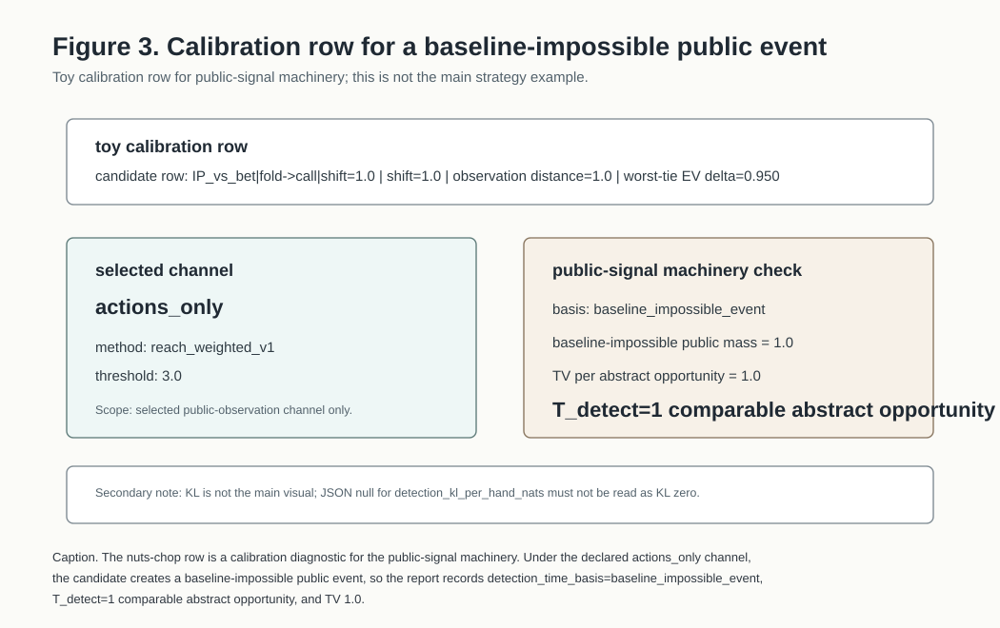
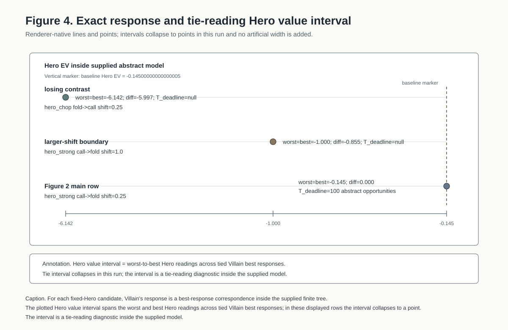
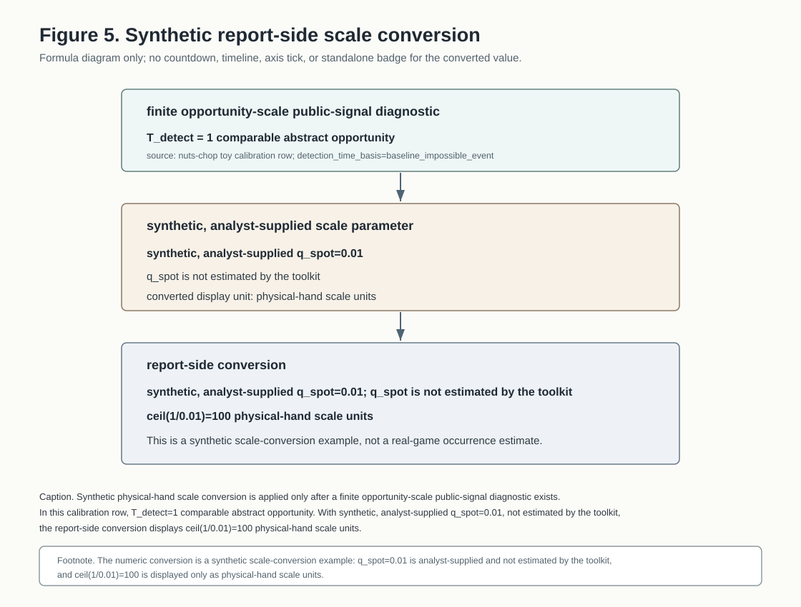

First Article Internal Memo: Final Article Artifact
M4-T27 repo-placed artifact for the repeated-poker-analysis article artifact. This standalone HTML assembles the M4-T22/M4-T24 Figure 1-5 SVG assets by relative reference and embeds Table 1, Table 2, and the public-facing ICM-only abstract STT side box as inline fragments.
Article Scope
The memo introduces a supplied finite abstraction, fixed-Hero candidate rows, exact Villain response inside the supplied tree, tie-aware Hero value readings, an economic switching-opportunity diagnostic, and a selected-channel public-signal diagnostic. All labels are scoped to the declared model and selected observation channel.
Safe Reading
Read the artifacts as diagnostic excerpts inside supplied finite abstractions. `T_deadline` is an abstract-opportunity diagnostic. `T_detect` is a selected-channel public-signal diagnostic under the declared channel and threshold.
Not Claimed
The memo does not claim actual adaptation time, human learning speed, an opponent prediction, a recommended play, a push/fold chart, or a real-game volume forecast.
What The Report Is

analysis_report.summary_counts.total,
analysis_report.candidate_rows.Count, and
counts.generated.
Field Dictionary Guardrails
The field dictionary is placed early so implementation field names do not drift into article-facing claims. It is a guardrail table, not an output leaderboard or decision table.
Table 2. Implementation fields and article labels
Field dictionary and guardrail table. This is not an output leaderboard or decision table.
| implementation field | article label | used in | safe interpretation | do not imply |
|---|---|---|---|---|
t_deadline |
T_deadline |
Fig. 2, Fig. 4, Table 1 | economic switching-opportunity diagnostic in abstract opportunities | actual adaptation time or safety window |
t_detect_estimated_opportunities |
T_detect |
Fig. 2, Fig. 3, Fig. 5, Table 1 | selected-channel public-signal diagnostic under declared channel and threshold | human learning speed or opponent prediction |
t_detect_hands |
v1 abstract hand/opportunity estimate | Table 2 only | legacy implementation field name; abstract opportunity unless conversion supplied | physical dealt hands by default |
detection_kl_per_hand_nats |
KL per abstract opportunity | Table 1/2 | selected public-observation distribution metric | unknown-strategy learning model |
detection_tv_per_hand |
TV per abstract opportunity | Fig. 3, Table 1/2 | distribution distance over public observations | same thing as observation_distance |
detection_baseline_impossible_mass_per_hand |
baseline-impossible public mass | Fig. 3, Table 2 | mass of public events absent under the baseline model | strategy exploitability |
detection_time_basis |
detection basis | Fig. 3, Table 1/2 | sprt_kl or baseline_impossible_event report convention |
psychological detection process |
t_detect_estimated_physical_hands |
optional physical-hand scale units | Fig. 5, Table 2 | report-side conversion from supplied q_spot |
real volume forecast |
comparable_spot_occurrence_probability_per_physical_hand |
supplied q_spot |
Fig. 5 | analyst-supplied scale parameter | estimated real-game occurrence rate |
post_response_hero_ev_worst_diff |
worst-tie post-response Hero EV delta | Fig. 4, Table 1 | model EV delta under tied-response reading | real profitability |
post_response_hero_ev_best_diff |
best-tie post-response Hero EV delta | Fig. 4 | other endpoint of tied-response reading | actual opponent mixture |
robustly_profitable |
audit-only field; do not display raw | audit only | if unavoidable, rewrite as "passes the model's above-baseline criterion" | profitable poker strategy |
is_eligible |
audit-only field; do not display raw | audit only | report filtering status | selected or recommended candidate |
is_ev_observation_deadline_pareto_candidate |
descriptive trade-off marker | audit only | descriptive frontier under selected fields | optimal recommendation |
STT value_unit |
modelled tournament prize-EV delta | STT side box | ICM-only payoff unit in supplied STT abstraction | tournament simulation or real-money EV |
| STT action labels | abstract action labels | STT side box only | labels inside supplied stt_pushfold-1 model |
push/fold chart advice |
Timing Split
The range-matrix main row separates two diagnostics: an economic switching-opportunity lane and a selected-channel public-signal lane. `T_deadline=100` stays on the abstract-opportunity scale and is not shown as a clock, countdown, safety window, or physical-hand timeline.

Calibration Row
The nuts-chop row is a toy calibration row for the public-signal machinery. It is not compared against the range-matrix rows as a competing play.

baseline_impossible_event as a
calibration diagnostic for the selected public-observation machinery.
KL is not the main visual, and no raw profitability flag is shown.
Tie-Reading Value Interval
For each fixed-Hero candidate, Villain's response is a best-response correspondence inside the supplied finite tree. The plotted interval is the worst-to-best Hero reading across tied Villain best responses inside the supplied model.

Synthetic Scale Conversion
q_spot=0.01 and
ceil(1/0.01)=100 appear with synthetic,
analyst-supplied, physical-hand scale units,
and not estimated by the toolkit. The converted value is
not a standalone badge, axis tick, headline, timeline endpoint, or real-game
forecast.

T_detect=1 comparable abstract
opportunity. With synthetic, analyst-supplied q_spot=0.01,
not estimated by the toolkit, the report-side conversion displays
ceil(1/0.01)=100 physical-hand scale units.
q_spot=0.01 is analyst-supplied
and not estimated by the toolkit, and ceil(1/0.01)=100 is
displayed only as physical-hand scale units.
Diagnostic Row Excerpt
Table 1 remains a neutral diagnostic row excerpt. The row order is the explanatory order from the production instruction: range-matrix context first, then a separated toy calibration excerpt.
Table 1. Diagnostic row excerpt
Neutral audit excerpt. The order is explanatory and grouped by source context.
| example | candidate row | shift | obs. distance | worst-tie EV delta | T_deadline |
T_detect |
public-signal basis | article use |
|---|---|---|---|---|---|---|---|---|
| Range-matrix main excerpt - abstract row labels | ||||||||
| range-matrix main | hero_chop fold->call |
0.25 | 0.25 | -5.997 | null | no finite estimate under the selected channel/model | selected channel KL/TV 0.0/0.0 |
losing contrast |
| range-matrix main | hero_strong call->fold |
0.25 | 0.25 | 0.000 | 100 | no finite estimate under the selected channel/model | selected channel KL/TV 0.0/0.0 |
Figure 2 main row |
| range-matrix main | hero_strong call->fold |
1.0 | 1.0 | -0.855 | null | no finite estimate under the selected channel/model | selected channel KL/TV 0.0/0.0 |
larger-shift boundary |
| Toy calibration excerpt - separate diagnostic row excerpt | ||||||||
| toy calibration | IP_vs_bet fold->call |
1.0 | 1.0 | 0.950 | 49 | 1 comparable abstract opportunity | baseline_impossible_event, TV 1.0 |
Figure 3 calibration |
robustly_profitable, is_eligible,
exclusion_reasons, or ranking boolean values.
ICM-Only Abstract STT Side Box
The STT material stays outside the main Figure 1-5 sequence. It is an ICM-only abstract side box showing that the diagnostic report structure can sit on another payoff backend.
shove/fold decision grid, not action advice, and
it does not apply physical-hand conversion to STT.
Integration Status
- Figure SVG assets are integrated by relative reference from this directory.
- Repo changes for this placement are limited to this artifact directory.
- Table 1, Table 2, and the STT side box are inline fragments; this artifact does not use iframe.
- Figure 5, Table 1, STT side box, Figure 2, and Figure 4 remain the priority QA targets after any renderer or layout change.